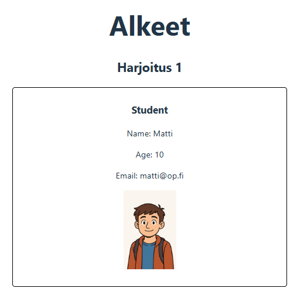
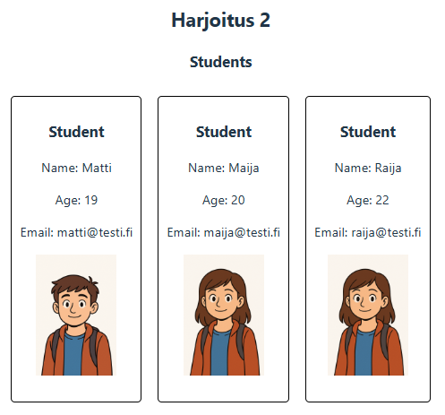
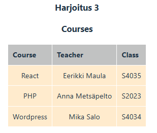
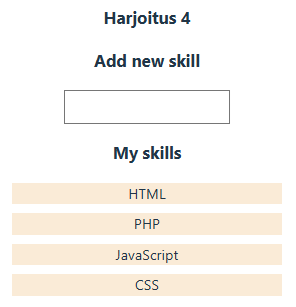
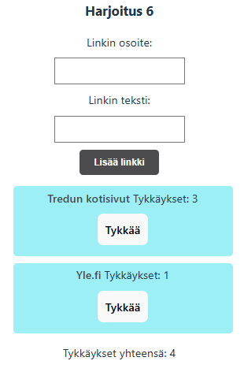

Harjoitus 1: alkeet
Harjoituksia yhden React-projektin alla.
Harjoitus 1
Aloita uusi React-projekti alkeet. Lisää src-kansion alle alikansio components. Tehtävänä on luoda Student.jsx-tiedosto jossa on komponentti Student. Näytä komponentissa yhden opiskelijan tiedot.

Harjoitus 2
Lisää Student.jsx-tiedostolle komponentti Students. Students saa taulukollisen olioita jotka tulostat Student-komponentin avulla. Lisää css-tyylitiedostoon tyylimäärittely jossa Student-komponentin tiedot näytetään gridin tai flexin avulla.

Harjoitus 3
Lisää components-kansioon tiedosto Table.jsx. Toteuta Table-komponentti joka saa parametrina taulukollisen kursseja. Tulosta return-osassa table jossa opiskelijan rivi (tr) luodaan map-funktion sisällä.

Lisää taulukko courses tiedostolle App.jsx:
const courses = [
{
name: "React",
teacher: "Eerikki Maula",
class: "S4035"
},
{
name: "PHP",
teacher: "Anna Metsäpelto",
class: "S2023"
}
,
{
name: "Wordpress",
teacher: "Mika Salo",
class: "S4034"
}
]
Harjoitus 4
Lisää uusi tiedosto Skills.jsx jossa toteutat komponentin Skills. Tarkoitus on pystyä syöttämään taulukkoon uusia merkkijonoja jotka edustavat oppimiasi taitoja. Tulosta taulukon sisältö map-funktion avulla näkyviin.

Katso mallia demosta kaksi.
Harjoitus 5
Lisää harjoituksille painike jonka avulla voit näyttää tai piilottaa kyseisen harjoituksen. Määrittele App.jsx-tiedostossa tilamuuttuja jokaiselle tekemällesi harjoitukselle. Voit vaihtoehtoisesti tehdä piilotuksen tapahtumaan harjoituksen otsikkoa klikkaamaalla.
Katso mallia demosta kaksi.
Harjoitus 6

Laadi komponentti Links jossa voidaan lisätä uusia link-olioita. Linkillä tulee olla teksti sekä url-osoite. Lisää myös satunnaisluku id-kentäksi.
Lisää lopuksi tykkäyksien yhteismäärän laskeminen reduce-funktion avulla.
Katso mallia demosta kaksi.